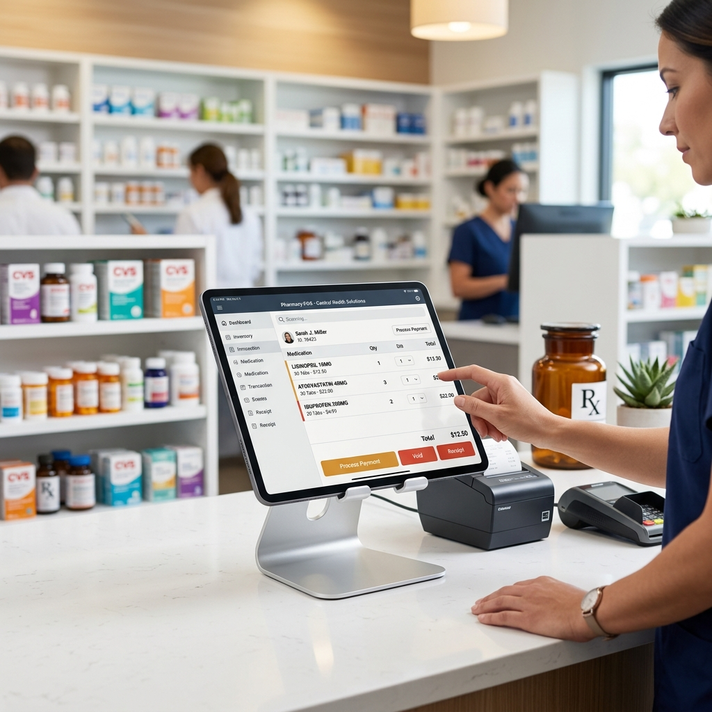

Know what's on the shelf. Sell it before it expires.
Formulary is pharmacy inventory management software with pos built for small to medium size pharmacies and medical stores. It runs around how you actually count stock — by batch, by expiry, by rack — instead of forcing you into a generic retail inventory system. Ring up a sale in seconds, and let the system pick the batch that expires first.

Trusted by independent pharmacies and small chains
Pharmacy inventory management software with pos, not a repurposed warehouse tool.
Most inventory tools started life for warehouses or general retail, then had a pharmacy skin bolted on later. Formulary started at the other end. Every screen assumes you are managing batch numbers, expiry dates and scheduled drugs, not generic SKUs on a shelf. That difference shows up in how stock is counted, in how a sale picks a batch, and in how a report reads. If you have ever tried to make a general retail system behave like a proper pharmacy stock management system, you already know why it matters.
A real pharmacy inventory system
Formulary tracks generic name, strength, batch, expiry and schedule class as first-class fields — the way a pharmacy inventory management system should, not as an afterthought.
A medicine stock management system your staff can use
Counting stock, receiving a purchase, and adjusting for damage all live in one medicine stock management system, so nobody re-keys the same numbers twice.
A pharmacy POS and inventory system in one login
Stock and billing share one dataset, so the pharmacy point of sale and inventory system never drifts out of sync with what's actually on the shelf.
0
SKUs tracked across live stores
0
Fewer stockouts after 90 days
0
Average checkout time per sale
0
Uptime over the last 12 months
Sell the batch that expires first, automatically.
Every product can hold several batches, each with its own cost, selling price, supplier and expiry date. At the register, Formulary highlights the batch closest to expiry with a "best expiry" badge — so first-expiry-first-out happens without anyone having to remember it.
This is the core of what makes Formulary a genuine drug inventory management system rather than a plain stock counter: expiry isn't a report you check once a month, it's a rule the register follows on every single sale. A drugstore inventory system that can't do this will always leave near-expiry stock behind the fast movers, and that stock becomes a write-off.
- Full stock movement ledger — purchase, sale, damage, return, adjustment
- Low-stock and 30-day expiry alerts on the dashboard
- Rack and shelf location per product for faster picking
Batch AX-1187
Expires 2026-08-01
Batch AX-1204
Expires 2027-02-14
Batch AX-1250
Expires 2027-09-30
A register built for a queue at the counter.
Search by name, barcode or composition, add to cart, and check out — all from the keyboard. F2 to search, F4 to discount, F9 to check out.
Because billing and stock share one database, this doubles as a pharmacy sales and inventory system: every invoice deducts from the right batch the instant it's printed. Run it as a straightforward pharmacy order management system for walk-ins, or open a hold ticket for a customer who's waiting on a doctor's call before confirming the order.
- Server-side price verification on every line item
- Atomic stock updates — two cashiers can never oversell the same batch
- Cash, card, UPI and split payments
Still tracking medicine stock in a register or a spreadsheet?
A lot of small pharmacies still count stock the way they did ten years ago: a handwritten register, a shared spreadsheet, or a memory of "we're low on that." It works, until it doesn't — a batch expires unnoticed, two staff members sell the same last strip to different customers, or closing stock never quite matches what the register says. Formulary exists to close that gap without asking your staff to learn a complicated system.
Stop losing track in a spreadsheet
A spreadsheet doesn't know when a batch is about to expire, and it doesn't stop two people editing it at once. A dedicated medicine inventory system does both by default.
One drug inventory system, every counter
Every till, every staff member and every store location reads from the same live numbers, so "let me check the back" stops being an answer customers hear.
Catches mistakes before checkout
As a pharmacy stock control system, Formulary blocks a sale that would oversell a batch, instead of letting the mistake reach the customer and the books.
What a day inside a pharmacy inventory management system looks like.
Software claims are easy to write. What matters is whether the tool holds up across an actual shift — a delivery in the morning, a queue at lunch, and a stock count before closing. Here's how that day runs on Formulary.
Receiving stock
A delivery arrives from the distributor. Instead of writing quantities into a register, the pharmacist opens a purchase order in Formulary, scans or types in each item, and records the batch number, expiry date and cost price as it's counted. As a pharmacy stock inventory system, Formulary treats this as the moment stock legally enters the store — every batch that gets sold later traces back to this one entry, supplier and all.
Lunchtime queue
Three customers arrive at once. The cashier searches each item by name or barcode, and the pharmacy point of sale and inventory system pulls the batch closest to expiry automatically, without anyone stopping to check a shelf label. Prices are verified against the server on every line, so a discount typed at the counter can never quietly override what's actually approved.
A doctor calls in an order
A regular customer's doctor phones in a prescription to be picked up later. The pharmacist opens a hold order in the pharmacy order management system, reserves the stock against that customer's account, and the item drops off the shelf count immediately — so it can't be sold to someone else by mistake before the customer arrives.
Closing the register
Closing used to mean tallying a cash drawer against a handwritten total and hoping the numbers matched. Now the manager pulls up the day's report inside the medicine inventory management system: total sales, payment method breakdown, and any items that dropped below their reorder point. What used to be a spreadsheet exercise for two people is a two-minute check for one.
None of this needs a separate module for "inventory control" and a separate one for "billing." Software for inventory control in pharmacy only earns its place at the counter if the person ringing up a sale never has to think about which system they're supposed to be using.
One system, from the back shelf to the register.
A pharmacy inventory management software is only useful if the everyday parts of running a store live in it too — pricing, staff, customers and the numbers you report on. Here's what ships with every plan.
Pharmaceutical product data
Generic name, strength, dosage form, schedule class, HSN/NDC codes and storage conditions, per SKU — the fields any real medicine inventory management system needs.
Role-based access
Owner, Manager, Pharmacist and Cashier roles out of the box, plus custom roles with module-level permissions.
Reports that write themselves
Sales, profit & loss, inventory value, expiry and fast-moving reports — plus a daily PDF to your inbox.
Full audit trail
Every edit is logged with before/after state, IP address and user agent — sensitive fields redacted automatically.
Customer accounts
Loyalty points, store credit and lifetime spend tracked automatically at every sale.
Secure by default
Tenant-isolated data, hashed passwords, rate-limited logins and validated input on every request, so your pharmacy stock control system stays yours alone.
Built for small pharmacy inventory, not enterprise chains.
Formulary is sized for the counter you actually run — one till, a small team, and stock you know by name. It scales up when you open a second location, but it never asks a single-store pharmacy to configure like a national chain.
Independent pharmacies
A single-counter pharmacy inventory system sized for small pharmacy inventory — no modules you'll never touch, no per-seat surprises.
Small pharmacy chains
A pharmacy store management system that keeps two or three branches on one login while still reporting on each store separately.
Medical & general stores
A medical store management system for shops that sell medicine alongside general items, without splitting stock across two tools.
Growing pharmacy groups
Consolidated reporting and role-based access, so adding a fourth or fifth store doesn't mean adding a second system.
One honest note on scope: Formulary is built for the retail pharmacy counter — it isn't hospital pharmacy or hospital material management software, and it doesn't track EMS supply trucks or general clinical assets. If that's what you're after, we're not the right fit, and we'd rather tell you now than after a trial.
Spreadsheet, generic POS, or a real pharmacy inventory system?
Most small pharmacies land on Formulary after trying one of two things first: a spreadsheet, because it's free and familiar, or a generic retail point-of-sale tool, because it's cheap and easy to set up. Both work for a while. Here's where each one tends to run out of road.
A spreadsheet
Fine for one person, one file, and small quantities. It doesn't warn you before a batch expires, doesn't stop two people editing the same row at once, and doesn't connect to the register — so the moment a sale happens, the sheet is already out of date. A medicine stock maintain sheet works right up until the day it doesn't.
A generic retail POS
Handles a barcode and a price well, but has no concept of a batch or an expiry date — it treats a strip of tablets the same way it treats a bar of soap. You end up tracking expiry separately anyway, which puts you back at a spreadsheet for the part that actually matters most.
Formulary
A pharmacy inventory management software and point-of-sale system built as one product, so a sale, a batch, and an expiry date are always the same record — not three things you reconcile at the end of the month.
Live on the shop floor in three steps.
Create your store
Name your pharmacy and we spin up an isolated account, just for you — no shared database, no setup call required.
Set business details
Country, currency and timezone, so reports and taxes line up from day one, and staff schedules match local time.
Import stock & start selling
Bring in your product list, add opening batches, and open the register — most stores are ringing up real sales the same day.
We stopped writing expiry dates on a whiteboard the week we switched. The register just won't sell the wrong batch anymore.
Store Manager, independent pharmacy · Pune
Our monthly stock count used to take a full evening with three of us on a spreadsheet. Now it's a report we run before closing.
Owner, two-branch medical store · Lucknow
Priced by store, not by headache.
No free tier, no download, no per-transaction fee — just a monthly plan for the pharmacy inventory management software you'll actually use every shift.
Starter
$99/mo
One store, up to 3 staff logins — a straightforward pharmacy inventory system for a single counter.
Compare plansGrowth
$149/mo
Up to 3 stores, unlimited staff — one pharmacy store management system across every branch.
Compare plansEnterprise
Custom
Chains with 10+ stores, SSO & SLA, with a dedicated rollout plan for your team.
Compare plansQuestions pharmacists actually ask
Your next expiry write-off starts on a spreadsheet.
Let's make this the last one. Start the trial today and see your own stock in a real pharmacy inventory management system by this afternoon.